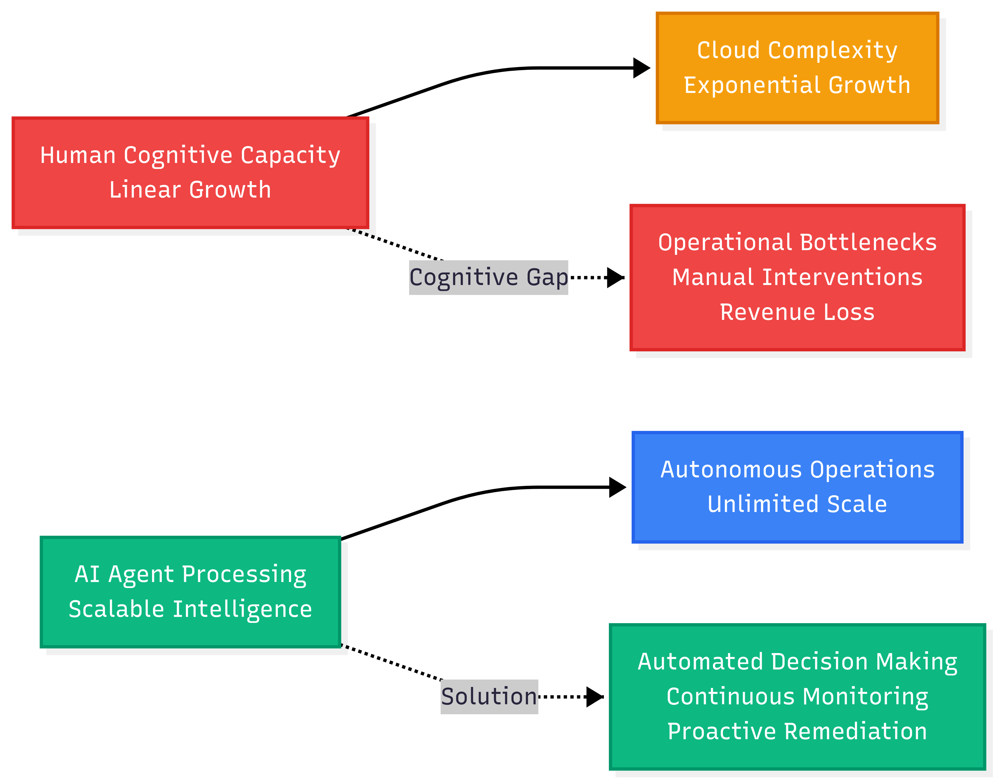
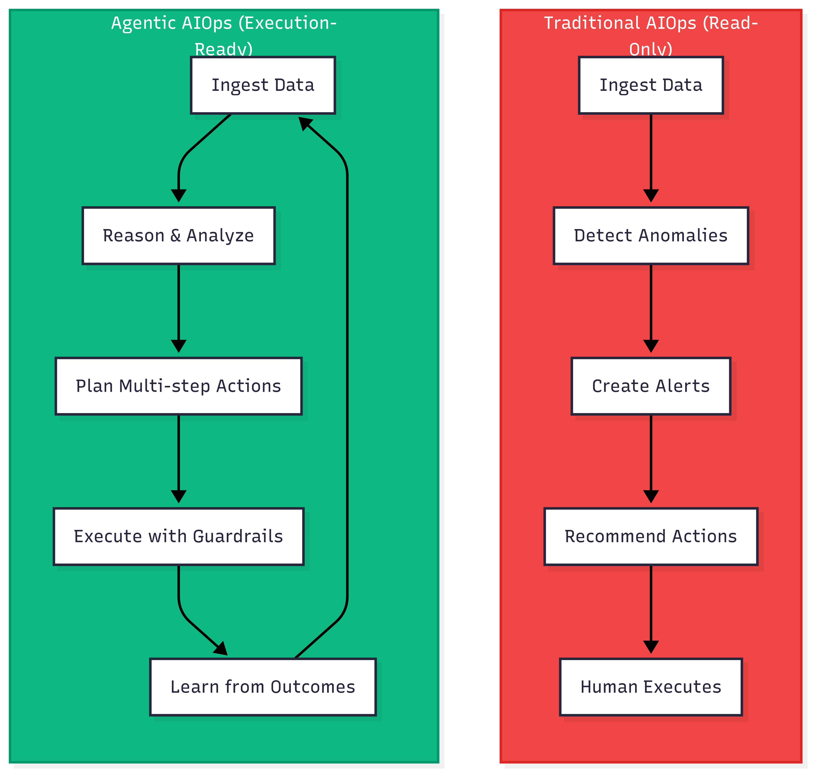
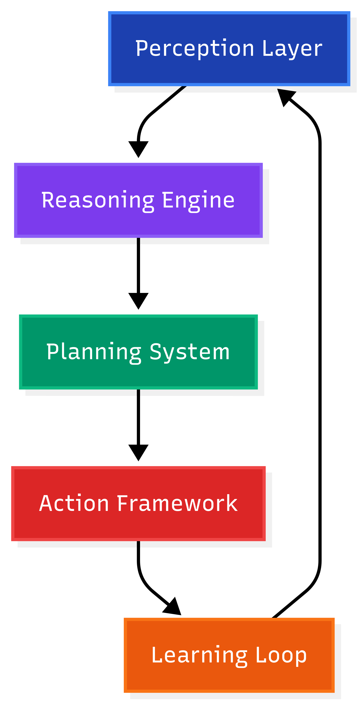
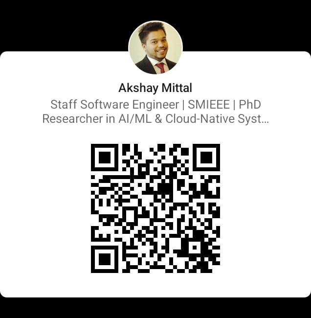

Architecting the Future of Application Modernization
InnoTech Austin 2026
Akshay Mittal, Ph.D.
Member of Technical Staff, Software Engineering · PayPal
Disclaimer: All content shared represents my personal research and professional interests. This presentation is not affiliated with or endorsed by PayPal or any other organization.
Cloud waste & complexity — industry headline + latest Flexera field data
$44.5B
Harness cloud waste study (2025, “FinOps in Focus”) projects ~$44.5B annual enterprise infrastructure cloud waste (~21% of spend)—pair with Flexera compute + platform waste % on chart.
Use as the attention anchor; pair with chart →
ESTIMATED COMPUTE + PLATFORM WASTE (SHAPE)
Bars 2020–24: schematic downward era (Flexera: five-year decline). 27% Flexera 2025 report · 29% Flexera 2026 (N=753): first rise—new AI workloads + new services. Not to-scale year-by-year.
The deeper crisis: cognitive overload — not lack of automation.
Signals outpace human judgment · Alert noise & on-call load still rising (DORA, vendor SRE/monitoring reports 2024–26)

(Cognitive load theory; e.g. Sweller; applied to DevOps)
"How do we automate repetitive tasks?"
"How do we scale operational intelligence?"
Making context-aware decisions about deployments, incident response, and resource optimization across 1000+ microservices
How do we scale operational intelligence without linearly scaling our engineering teams?
The solution isn't more humans—it's AI agents that think and act autonomously
Agents need machine-readable truth: IaC (Terraform, Pulumi), K8s manifests, policy-as-code, golden paths. You steer by desired state + guardrails, not ad-hoc scripts—otherwise autonomy has nothing solid to reconcile against.
Traditional vs. agentic shift (Gartner, 2025) | Read-only to execution-ready adoption (McKinsey, 2025)

Human is the executor
Human is the supervisor
Adoption (illustrative): surveys vary widely—treat ~50% production / ~69% human-verified agentic decisions as talking-point ranges, not audited facts (replace with your vendor’s primary survey before a board pack)

5-layer architecture enables AI to see, think, plan, act, and learn like senior SRE
(Standards: IEEE P3833 draft—proactive agent HCI framework; IEEE 3119-2025—AI procurement risk, not stack topology; plus vendor patterns)
Signals from logs, metrics, traces, and user sentiment
LLM + knowledge graph; step-by-step reasoning; doc search over runbooks
Multi-step execution plans with verification and rollback
API integrations + guardrails for safe execution
Continuous improvement from outcomes and feedback
Prometheus + OpenTelemetry | Vector databases (e.g. Pinecone/Weaviate) | Kubernetes operators | semantic search at scale (embedding counts/accuracy—deployment-specific; cite your own evals)
Example targets: 95% accuracy | 3% false positive | 100% human approval for production changes
Manual investigation and remediation
Automated detection and remediation
Handle routine issues automatically, escalate complex problems to humans
Confidence <80% → Escalate | High-risk → Approve | All → Audit trail
GitLab Duo Agent Platform (GA Jan 2026): Planner Agent, Security Analyst Agent; Agentic Flows run asynchronously (e.g. resolve vulnerability + open MR without human waiting). Qovery Agentic DevOps Copilot: Infrastructure-specific agents; 4-phase maturity (Basic → Agentic → Resilience → Memory). (GitLab, Qovery 2025–26)
Reality: 85% multi-cloud orchestration required · See also Microsoft’s Agentic DevOps practice framing (principles & strategic direction, 2025–26)
First open-source agentic AI for K8s. Solo.io → foundation sandbox (May 2025). MCP-style tools: K8s, Prometheus, Istio, Argo. 100+ contributors, 1,000+ stars in 100 days.
CNCF Blog, Solo.io, GlobeNewswire
Beta Feb 2025. Desktop & CLI: Dockerfiles, troubleshooting, vulns, Hardened Images. Search-backed answers from Docker docs.
Docker Blog, Docker Docs
Open standard (“USB-C for AI”). AWS Cloud Control, Opsera, GitHub registry. 7,190+ stars, 320 contributors.
modelcontextprotocol.io, Anthropic
Oct 2025. Reasoning agents; “Insights in a Box,” GitHub MCP. Natural-language why/what/impact/ROI. Cisco, Honeywell, Qualys, Sephora.
Opsera Newsroom, PR Newswire
Harness AI (GA Aug 2025): “Everything after code”—testing, security, deployment, optimization; agentic pipelines, natural-language policy. ~80% SDLC failures post-coding. (Harness Blog, 2025)
Planner Agent — structure, prioritize, break down work. Security Analyst Agent — vulnerability triage, risk assessment, false positive ID. Agentic Flows — one or more agents combined; run asynchronously in the background (e.g. resolve a vulnerability and open an MR without human waiting). Agentic Chat across Web UI and IDEs.
GitLab Press Release, GitLab Docs (Jan 2026)
Infrastructure-specific agent. 4 phases of maturity: Basic (intent-to-tool), Agentic (planning), Resilience (self-correction/retry), Memory (cross-session context). Multi-step workflows, root-cause diagnosis, natural-language infra ops. Read-only mode as default; read-write coming. Console, Slack Bot, MCP Server.
Qovery Blog, Qovery Docs (2025)
Open protocol (announced Apr 2025) so agents from different vendors can talk to each other—e.g. Salesforce and Google Cloud. Capability discovery via “Agent Cards,” task-oriented communication, enterprise auth. 50+ partners (Atlassian, SAP, Salesforce, ServiceNow, Accenture, Deloitte). Enables cross-platform agent collaboration.
Google Developers Blog, a2a.cx, google.github.io/A2A
Simple intent-to-tool mapping, hardcoded logic. Predictable; manual tool chaining. Limited flexibility for unexpected requests.
Dynamic planning: analyze request, sequence tool invocations autonomously. Solves unanticipated needs; exposes fragility in tool chaining and errors.
Retry logic, robust error handling. Retry with corrected approach; validate intermediate states; re-plan if execution fails.
Context across multiple requests; follow-up questions; continuous learning. No longer each request in isolation.
Pilot tip: Start at Basic or Agentic with read-only mode as default; enable write only after guardrails and human-in-the-loop are in place. (Qovery: read-only default; read-write coming)
Unmanaged AI agents and identities operating outside oversight. In 2026 the risk isn’t only humans pasting secrets—it’s unmanaged agents doing “vibe coding” (rapid, unvetted AI generation) and creating infrastructure backdoors. Non-human identities (NHIs)—service accounts, workload identities, APIs, agents—already represent the majority of identities in many enterprises (e.g. 45:1–92:1 NHI-to-human in some studies). Agents autonomously initiate actions and access data with unmanaged credentials; traditional identity models break down.
DoControl, IBM, Astrix, Hush, Token Security (2025–26)
Every agent gets its own non-human identity (NHI) with strictly scoped RBAC (Role-Based Access Control). No shared or hardcoded secrets. Runtime guardrails: continuous monitoring, policy enforcement, anomaly detection. Kill switch: one-click revocation and remediation. Start agents in read-only mode; promote to write only with approval gates and audit trails. OpenID and industry frameworks (2025) outline auth and authorization for agentic systems.
Akeyless, Hush, OpenID Foundation (2025)
Takeaway: Security isn’t a reason to avoid agentic DevOps—it’s a reason to govern it. NHI + RBAC + runtime guardrails + kill switch + read-only default = the baseline for production agents.
88% use AI daily (code gen 75%, docs 71%). 73% say AI is central to org goals; 90% expect it to transform their future. But: 59% report skill gaps; 56% worried about hallucinations; “implementation plateau” between experiments and measurable ROI.
Platform Engineering.org, Weave Intelligence, Vultr (204 respondents)
79% of teams exploring AI for incident trending (Atlassian 2025, 500+ respondents). 74% cite security as barrier to expanding AI. Research: multi-agent LLM systems (e.g. STRATUS) 1.5× prior SRE agents; IBM LLM-assisted anomaly detection—500+ users, 200K+ API calls/year.
Atlassian, IBM Research, arxiv (2025)
Vendors like Tricentis now market end-to-end agentic QE—AI interpreting change risk, auto-directing tests, NL → tests, performance agents—so velocity from Copilot-class tools doesn’t outrun verification. (Tricentis press/blog, 2025–26)
Academic framing: moving from “assist” to delegated agency in pipelines—design constraints, not vibes (e.g. arXiv:2605.07062, 2026).
Adoption is mainstream; durable ROI needs QE + governance + golden paths. Platform engineers as “architects of enterprise AI.” Continuous AI (GitHub) and agentic CI handle judgment-heavy tasks rules can’t. Human oversight and security remain non-negotiable.
Sources: Forrester Wave DevOps Platforms Q2 2025; industry impact benchmarks · See also Forbes / Cortex — “Quality Tax” discussion (AI-accelerated dev)
The “Quality Tax” (counterweight to speed): Industry coverage cites striking figures—for example ~43% of AI-generated code still needing production debugging post-QA/staging in some analyses, alongside telemetry such as +23.5% incidents per PR and ~+30% change failure rate signals in surveyed org workflows (reporting citing Forbes contributors & Cortex, 2025–26). Use as directional risk sizing, not a promise for your KPI sheet.
Reduction in deployment lead times
Decrease in production incidents
Faster incident resolution (MTTR)
Improvement in developer productivity
Reduction in cloud infrastructure costs
Faster time to market for new features
Embedding agents into workflows (vs bolt-on): 30–50% faster processes, up to 40% reduction in low-value work (BCG research cited by Dynatrace, 2026). Industry benchmarks: 50% faster processing of operational inquiries; up to 80% toil reduction in resolution workflows where agents are used end-to-end.
What's 80% MTTR improvement or 50% faster inquiry resolution worth to your organization?
Developer efficiency across 10,000+ engineers
Structured 7-week Copilot pilot with 100+ senior engineers
Agent-assisted code review and automated testing
Faster task completion
Improvement in code quality
Faster PR velocity
Annual productivity savings
Implementation Context: 7-week pilot with 100+ engineers → scaled to 2,000+ developer seats | GitHub Analytics & surveys | 68% positive UX
Source: GitHub Universe 2025 / Thomson Reuters AI adoption (GitHub Inc., 2025)
Engineers initially skeptical became strongest advocates - AI coding assistance is now mandatory for all new projects
Team: 1 PM (.5), 2 Eng (.3), 1 Arch (.2) · Budget: $50K · Out: Governance, pilot selected
Team: +3 pilot (.4), 1 ML (.3) · Budget: $150K · Out: AI assistant, 80% accuracy
Team: 8 total (.3 FTE each) · Budget: $100K · Out: First autonomous action, ROI
Success Metrics: 80% MTTR reduction · 50% deployment acceleration · $2M+ annual savings · 90% team adoption
Who wants the detailed implementation checklist?
The industry is moving from "read-only" recommendations to "execution-ready" AI agents
Governance includes runtime controls (agent IDs, audit trails, human override), not just policy. Trust and accountability are prerequisites.
Agents are the engine; the IDP defines the Golden Paths agents are allowed to walk—making autonomy scalable and governed
AWS, Azure, and GCP are building their futures around agentic AI
Autonomous doesn't mean unsupervised. Runtime guardrails, human-in-the-loop, and a kill switch are non-negotiable. Pair speed with agentic quality engineering (risk-aware test direction, NL→tests) so AI-generated change doesn’t outrun verification. Start pilots in read-only mode; enable write only after guardrails and audit trails are in place.
By 2026, specialized agents collaborate: Code-Gen → Security-Scan → Deploy → Monitor. Ecosystems already combine AWS Kiro, GitHub Copilot, ServiceNow Assist, Azure SRE Agent. Start building now.
Nature Machine Intelligence (2025) · trade press on multi-agent roadmaps · Dynatrace/BCG on embedded agents—cite specific URLs before filing.Your competitive advantage depends on how quickly you start.
Scan QR code to connect on LinkedIn
Disclaimer: Personal research and professional interests only. Not affiliated with PayPal or any organization.

LinkedIn Profile
Questions? Let's discuss how to implement agentic operations in your organization.
InnoTech Austin 2026 · Agentic DevOps in the Autonomous Cloud
Atlassian. (2025). State of AI in incident management / ITSM coverage (verify exact report title on atlassian.com).
CNCF. (2025). Kagent: Bringing Agentic AI to Cloud Native. CNCF Blog.
CNCF. (2025). Annual Report 2025 (project counts, ecosystem).
Datadog. (2025). State of Monitoring / observability research. Datadog Inc.
Docker. (2025). Docker AI Agent (Gordon) beta. Docker Blog.
DORA / Google Cloud. (2025). State of AI-assisted Software Development 2025. dora.dev.
DORA. (2025). Accelerate State of DevOps Report 2025. Google Cloud.
Flexera. (2025). State of the Cloud Report 2025 (IaaS/PaaS waste, survey methodology).
Flexera. (2026). State of the Cloud Report 2026 (N=753; 29% IaaS/PaaS waste; hybrid trends). Flexera.
Forbes Business Council. (2026). Contributor articles on AI-accelerated development risk (“Quality Tax” framing—verify author/title).
Cortex. (2025–26). Engineering metrics & change failure discussions (vendor blog/docs).
Forrester. (2025). The Forrester Wave™: DevOps Platforms, Q2 2025. Forrester Research.
Gartner. (2024–25). Cloud forecasts & hybrid/multi-cloud trend press releases and hype cycles. Gartner Inc.
GitLab. (2025–26). Global DevSecOps Report 2025; GitLab Duo Agent Platform GA (Jan 2026 press/docs).
GitHub. (2025). Thomson Reuters AI adoption / Copilot case materials. GitHub resources.
Google. (2025). Agent2Agent (A2A) Protocol. Google Developers Blog; a2a.cx; google.github.io/A2A.
Harness. (2025). FinOps in Focus / infrastructure waste projection (~$44.5B)—press release & report. Harness.
Harness. (2025). Harness AI SDLC announcements. Harness.io Blog.
IBM Research. Operational AI / SRE analytics (verify specific paper or product brief).
IEEE SA. (2025). IEEE 3119-2025 (AI procurement). IEEE Standards Association.
IEEE SA. (2025). IEEE P3833 (draft PAR—proactive AI agent framework). IEEE Standards Association.
Model Context Protocol. (2025). Specification. modelcontextprotocol.io.
McKinsey & Company. (2025). Enterprise AI automation reports (verify exact title before citing).
Microsoft. (2025–26). Agentic DevOps framing. Microsoft Developer Blogs.
Mittal, A. (GitHub). AI-Augmented DevOps… github.com/akshaymittal143/AI-Augmented-DevOps
OpenAI. Model cards & evals—verify any benchmark numbers against primary OpenAI + benchmark publishers.
Tricentis. (2025–26). Agentic quality engineering announcements. Tricentis.
Barnes, M. E., Ghaleb, T. A., & Hassan, S. (2026). From Assistance to Agency: Rethinking Autonomy and Control in CI/CD Pipelines. arXiv:2605.07062.
Nature Machine Intelligence. (2025). Volume 7—multiple peer-reviewed articles on AI risk, transparency, deployment (use specific DOIs when citing).
OpenID Foundation. Identity and authorization materials relevant to agents (verify whitepaper title).
Opsera. (2025). Hummingbird AI / MCP announcements. Opsera Newsroom.
Qovery. (2025). Agentic DevOps Copilot; maturity phases. Qovery Blog & Docs.
PagerDuty. Annual reporting & operations research (verify year/title).
Platform Engineering.org / Weaveworks. State of Platform Engineering / AI surveys (verify edition).
Security / NHI. (2025–26). Shadow AI & non-human identity vendors (Astrix, Akeyless, etc.)—use vendor primary sources.
Solo.io. (2025). Kagent framework & CNCF Sandbox donation materials.
Sweller, J. Cognitive load theory (general education literature—use established CLT sources; do not invent venue-specific citations).
Uptime Institute. (2025). Global Data Center Survey / outage analysis (verify statistic wording against Uptime PDFs).